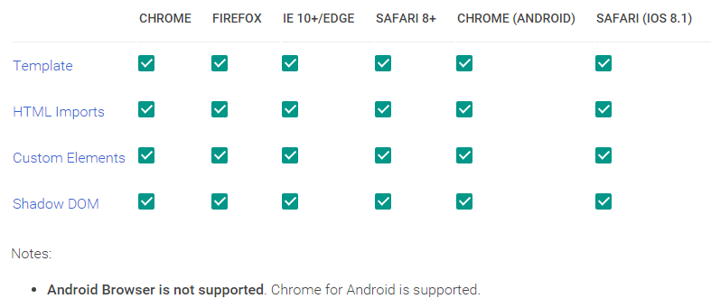

Web Components and Polymer
The future of the web ?
SCOOP Vortrag Jan. 2016 / M. Schmitt
Schon wieder ein Web Framework?
Wir hatten bereits:
- ...
- JSF
- jQuery
- Apache Wicket
- GWT
- Dart
Schon wieder ein Web Framework?
aktuell beliebt:
- Angular 1/2
- React
- Web Components ?
- Polymer ??
Warum?
- Browserumgebung entwickelt sich weiter
- Gute Features werden in Browser übernommen
- Client kann mehr Funktionen übernehmen
Neues Browser Feature
Web Components...
Teil 1: Theorie
http://webcomponents.orgThe goal of web components is to reduce complexity by isolating a related group of HTML, CSS, and JavaScript to perform a common function within the context of a single page.
HTML Document
- Browser erzeugt aus HTML Elementen document mit DOM
- HTML Elements sind in Spec vorgegeben: a, input,...
- unbekannte Elemente werden ignoriert: <abc/>

HTML Element
<tagname attr="val">content</tagname>
Html Element enthält:
- tagname
- Properties
- Content
- Events
- Methods
- Rendering
Html Element Specification
Web Components
- Erstellung neuer Html Elemente: <x-foo>Hi.</x-foo>
- Kapselung des dazu nötigen Html, JS und CSS Codes
Web Components
Bündelung von 4 neuen W3C Spezifikationen: http://webcomponents.org/
| Custom Elements | |
| HTML Imports | |
| Templates | |
| Shadow Dom |
Web Components
| Custom Elements | |
| HTML Imports | |
| Templates | |
| Shadow Dom |
 Custom Elements
Custom Elements
This specification describes the method for enabling the author to define and use new types of DOM elements in a document.
- neue Elemente müssen ein "-" enthalten!
- document erhält eine Registry, in der neue Elemente registriert werden können.
- Element Registrierung kann auch nach der Verwendung erfolgen!
 Custom Elements
Custom Elements
kann HTMLElement erweitern
//create element x-foo
document.registerElement('x-foo', {
prototype: Object.create(HTMLParagraphElement.prototype, {
firstMember: {
get: function() { return "foo"; },
enumerable: true,
configurable: true
},
}),
extends: 'p'
});
//use element x-foo extends HTML Element p
Paragraph
Eigenschaften aus HTMLElement sind enthalten.
 Custom Elements
Custom Elements
kann neues Element erzeugen
//create element x-foo
document.registerElement('x-foo', {
prototype: Object.create(null, {
})
});
//use element x-foo
 Custom Elements
Custom Elements
Callbacks beim Erzeugen des custom Elements
| Callback name | Called when |
|---|---|
| createdCallback | an instance of the element is created |
| attachedCallback | an instance was inserted into the document |
| detachedCallback | an instance was removed from the document |
| attributeChangedCallback(attrName, oldVal, newVal) | an attribute was added, removed, or updated |
Web Components
| Custom Elements | |
| HTML Imports | |
| Templates | |
| Shadow Dom |
 HTML Imports
HTML Imports
lädt externes HTML mit css, script und anderen links
// import element from external html file
//use element x-foo
//x-foo.html:
...Mozilla will Html Import nicht umsetzen!
 Templates
Templates
Declare DOM subtrees in HTML and manipulating them to instantiate document fragments with identical contents.
- <template> ist ein neues HtmlElement.
- <template> erzeugt ein Dokument Fragment.
- Der Inhalt von template wird nicht direkt gerendert.
- nur über API integriert.
 Templates
Templates
Name Colour
Web Components
| Custom Elements | |
| HTML Imports | |
| Templates | |
| Shadow Dom |
Shadow DOM
This specification describes a method of combining multiple DOM trees into one hierarchy and how these trees interact with each other within a document, thus enabling better composition of the DOM.
Shadow DOM
- ermöglicht Zusammenführung von DOM Trees
- Jedes Element kann einen Node Tree bekommen "shadow tree".
- Kapselung: css, javascript, id ist nur innerhalb des shadow tree gültig
- Kapselung: document kann nicht auf shadow tree Inhalte zugreifen
Shadow DOM

Shadow DOM
composed tree

Shadow DOM
Slots and distributions
- Children aus den Document werden in slots des shadow trees übernommen.
text
Shadow DOM - Slots

Shadow DOM - Example
Shadow DOMWeb Components
| Custom Elements | |
| HTML Imports | |
| Templates | |
| Shadow Dom |
Wo wird das unterstützt?
Browser Unterstützung
Polyfill
Polyfill ermöglicht den Einsatz in "allen" Browsern.
Polyfill
webcomponents-lite.js
für Custom-elements und html-import
<script src="webcomponentsjs/webcomponents-lite.js"/>
webcomponents.js für alle 4 Specs
plus ES6 Weak-Maps und Mutation Observer
<script src="webcomponentsjs/webcomponents.js"/>
echte Kapselung von CSS, JS in Shadow DOM kann nicht in polyfill realisiert werden.
Web Components Frameworks
Die folgenden Libraries und Frameworks verwenden die Web Components Specs:
- x-tag (ex-Mozilla, nun Microsoft)
- bosonic
- Polymer (Google)
Interoperabilität
Web Components können aus "beliebigen" Frameworks miteinander gemischt werden.
Sie können auch in SPA Frameworks (wie Angular, React) integriert werden.
Teil 2: Web Framework Anforderungen
Workflow
- Laden einer Html Seite im Browser (mit css, js)
- DOM erzeugen aus HtmlElements und Custom Elements
- Aktionen bei Events
- Nachladen von Daten oder Templates
- Daten, Templates dynamisch in Seite einbauen
Web Framework Konzepte
- früher: Server rendert fertige HTML-Teile
- jetzt: Client holt Daten und Templates und rendert diese selbständig
- Seite wird aus Templates/Komponenten/Widgets zusammengebaut.
- Single Page Application: nur noch eine Seite
- Data Binding: Mapping zwischen Data Model und DOM
Technische Anforderungen
- Framework nutzt Features der Browser Engine.
- Trennung in Html, CSS, JS
- Template Engine
- one-way und two-way data binding
- frei verfügbare umfangreiche Komponentenbibliothek
- Support für Layout
- Komponenten mit anpassbarem Styling.
- Navigation in SPA mit History
- Support für zukünftige Features: Offline, locale Storage, WebWorker, Push Notification
Fachliche Anforderungen
- Komponente: Charts, Eingabe mit Validierung
- Komponente: Table mit Sorting, Paging, Filter
- Internationalisierung
- Behindertengerecht, ARIA, HighContrast
- Sicherheitschecks
- Responsive Layout (Mobile)
- export Teile der Seite nach PDF, Excel, Print
- Kundenstyling css-file integrierbar
- Support für Kundenbrowser (IE9+ ??)
- Support für "beliebige" Browser (Safari, Android Browser)
Entwicklung Anforderungen
- Framework mit Dokumentation, Beispiele
- Kompatibilität mit anderen Frameworks (Jquery integrierbar,..)
- sehr gute Performance und Memory Consumption
- IDE Support
- ES6 oder TypeScript Support
- Debugging und Error Handling im Browser
- Mapping zwischen Server Data and Client Data
- Wartbarkeit des Codes
Web Components
Pro:
- Template Engine standardisiert in BrowserEngine
- Komponenten über custom elements
- Default DOM Framework und API
Web Components
Contra:
- keine Lösung für data binding oder layout support
- keine Lösung für I18n, ARIA, Sicherheit
- kein Framework, sondern nur Erweiterung der HTML Spec
- umständlicher JS Code wird durch standardisierten umständlichen JS Code ersetzt.
Angular 1/2
Pro:
- SPA, modularer Aufbau
- Template Engine
- two-way data binding
- MVC mit $scope
- Support für I18N, ARIA, Sicherheit ??
- Komponenten über Directives
- grosse Komponenten Bibliothek
- Web Components lassen sich integrieren
Angular 1/2
Contra:
- basiert nicht auf Standard Web Components
- hat "steile" Lernkurve und komplexe API
- hat eigene Template Engine, daher keine Kapselung durch Shadow DOM
- Fehlerursache manchmal kryptisch ?
- Versionsumbruch 1.0 / 2.0
Teil 3: Praxis
http://polymer-project.org
Polymer Erfahrungen
- Polymer Konferenz in Amsterdam
- Polymer in privaten und internen Projekten

Polymer
- Erstellung neuer Komponenten über Web Components
- mit einfacher API
- Import der Komponenten mit HTML Imports
- one-way und two-way data binding
- echte Kapselung HTML, CSS, JS durch Shadow DOM
Beispiel Polymer Element
Lifecycle
- Polymer.dom API
- Zugriff auf Shadow DOM
- Steuerung der custom elements
Beispiel Lifecycle
Shady DOM
- polyfill for Shadow DOM
- simuliert Kapselung
- great performance
- Polymer benutzt Shady dom als default!
- einschalten mit ..?dom=shadow oder
Beispiel Shadow DOM
Data Binding
- properties
- observer
- notifypath
- support für Arrays und Objects
Data Binding
{{name}} two-way
[[name]] one-way
Beispiel Data Binding
event handling
- listener
- custom events
Beispiel Events
on-tag
listener: handleSelect
Data Elements
bevorzugtes Pattern:
Custom Elements ohne GUI (kein template)
Trennung zwischen Bereitstellung der Daten und Anzeige
Beispiel Data Elements
Layout und Custom Styling
Beispiel Layout und Styling
Mixins durch Behavior
Integration ARIA
Integration I18N
Komponentenbibliothek
gesammelte Web Components findet man unter:
- https://customelements.io/
- https://elements.polymer-project.org/
einfache Integration über: "bower install"
Debugging
- $0 in DevTools
- src code aller Komponenten vorhanden.
- Breakpoints in Browser oder Remote Debugging
einfache Integration über: "bower install"
Produktionsdeployment
- vulcanize macht aus allen Resourcen ein einziges Html File
Beispiel Polymer Web Anwendung
Polymer
Pro:
- Template Engine auf Basis von Web Components
- Erstellung von custom elements sehr einfach
- one-way und two-way data-binding
- grosse Komponenten Bibliothek
- Support Layout, css custom styling
- Data Elements reduzieren JS Code
- wartbarer Code, da gut gekapselt und wenig API
- Support für Offline, WebWorker, push Notifications
Polymer
Contra:
- Versionsumbruch: 0.5 auf 1.0 (aktuell: 1.2.3)
- Internet Beispiele teilweise veraltet.
- Dokumentation knapp.
- Komponentenbibliothek Polymer eher auf Mobile ausgerichtet.
- Verständnis von Web Components hilfreich.
Kaufempfehlung

Caveat: Das hätte ich vor 5 Jahren bei GWT auch gesagt.
Fragen